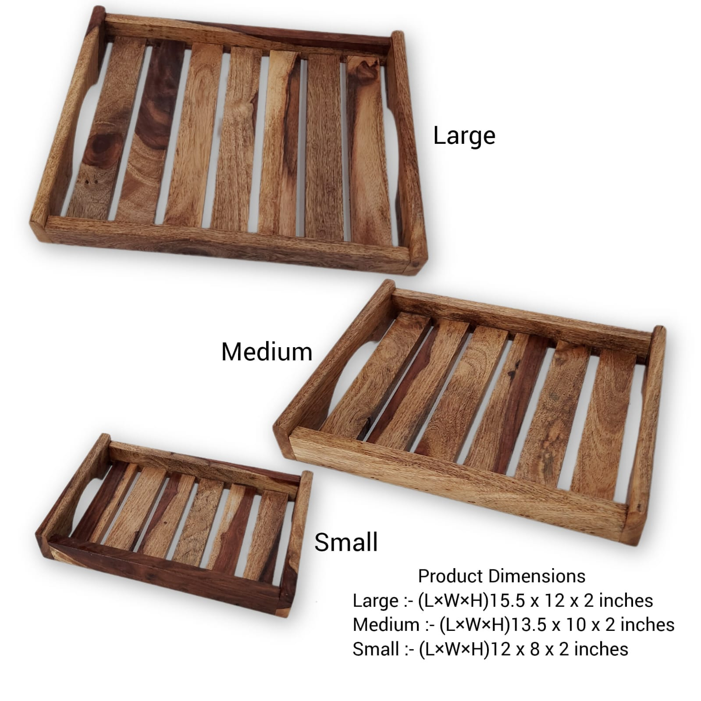

SK-WT-001 · WOODEN TRAYS
Sheesham Wooden Tray Set of 3
Slatted base · Nesting set · Three practical sizes
₹750
GST @ 5% extra · Shipping charges extra
- Material
- Sheesham wood
- Weight
- 4 kg
- Large
- 15.5″ × 12″ × 2″
- Medium
- 13.5″ × 10″ × 2″
- Small
- 12″ × 8″ × 2″
A handcrafted set of three Sheesham wooden trays featuring an open slatted base and raised sides. The three graduated sizes can be used for serving, display and everyday organization, while the nesting design makes the set convenient to store.
WhatsApp to Order · ₹750